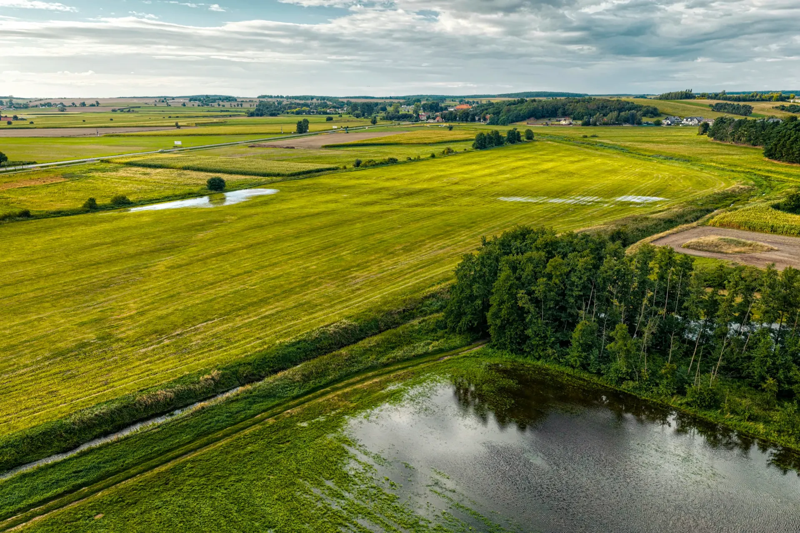

[ Decisiones con números ]
Cinco simuladores para dimensionar tu estrategia climática antes de la primera reunión. Elegí uno para empezar.
¿A qué ritmo tenés que reducir?
Definí tus emisiones actuales y tu meta.
Año base 2026. Referencia: contracción lineal de 4,2 % anual del año base, el ritmo mínimo que usa SBTi para metas alineadas a 1,5 °C en alcances 1 y 2.
¿Cuánto cuesta compensar con calidad?
Emisiones residuales que querés compensar cada año y qué parte con créditos de alta calidad.
Precios de referencia: Sylvera, State of Carbon Credits, datos de mercado del 1.er trimestre de 2026. Los créditos de calidad cotizan 3,5 veces más y su oferta viene bajando desde 2023. Coralia desarrolla proyectos propios con rating A–AA antes de la emisión.
Armar mi estrategia de compensación →Calculá una huella rápida
Mové los controles con datos aproximados de un año de tu empresa.
Estimación ilustrativa con factores genéricos. La plataforma usa más de 1.000 factores de emisión, 190 benchmarks sectoriales y trazabilidad ISO 14064 / 14067.
Hacer mi huella real →¿Tu tierra puede ser un proyecto de carbono?
Elegí qué hay hoy en el terreno y cuántas hectáreas tiene.
Rango ilustrativo, valorizado entre USD 5,7 (promedio de mercado) y USD 20 (créditos investment grade), según Sylvera, 1.er trimestre de 2026. El diagnóstico NbS del Carbon Markets Hub evalúa elegibilidad filtro por filtro, benchmarks, biodiversidad y análisis financiero en unos 5 minutos.
Pedir el diagnóstico →Evaluá un riesgo climático
Elegí la amenaza, el escenario y el horizonte de tiempo.
AmenazaEjemplo ilustrativo. La Climate Risk App modela 5 amenazas y 9 indicadores ETCCDI con proyecciones CMIP6, a 1–5 km de resolución, activo por activo (ISO 14091 · TCFD / ISSB).
Analizar mis activos →